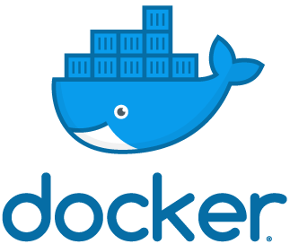

Einführung in
Vagrant vs Docker
Dockerfile
FROM php:7.0-apache
MAINTAINER Steven Zemelka <hello@klizzy.com>
RUN apt-get update \
&& apt-get install -y vim git curl zsh
# Installing Composer
RUN php -r "copy('https://getcomposer.org/installer', 'composer-setup.php');" \
&& php composer-setup.php \
&& php -r "unlink('composer-setup.php');" \
&& mv composer.phar /usr/local/bin/composer \
&& chmod +x /usr/local/bin/composer
COPY ./www/* /var/www/html/
WORKDIR /var/www/html/
RUN composer install
Image.. Container..

“An instance of an image is called a container.”
üê≥ üìÑ üç∞
Wie starte ich einen Container?
docker run --name klizzy_php_container -d -p 8080:80
klizzy/php-base:7.2
PHP/Apache, MySQL & SSH
docker run --name devEnv -d -p 8080:80 -p 2222:22 -p 3336:3306
ikswolosewsxn/ubuntu-apache-mysql:5.7
Error - port already used!

Docker ps
Docker ps
üòë
sudo lsof -i -n -P | grep :80
netstat -ab

Docker exec
Volumes
docker run --name klizzy_php_container -d -p 8080:80
-v ./www:/var/www/html klizzy/php-base:7.2
docker-compose
#docker-compose.yml
version: '3.3'
services:
php:
image: klizzy/php-base:7.2
container_name: klizzy_php_container
ports:
- "8080:80"
volumes:
- ./www:/var/www/html
depends_on:
- db
db:
container_name: klizzy_db_container
image: mysql:5.7
ports:
- "3336:3306"
environment:
MYSQL_ROOT_PASSWORD: root123
volumes:
- ./.dump/dump.sql:/docker-entrypoint-initdb.d/dump.sql
#docker-compose.yml
version: '3.3'
services:
php:
image: klizzy/php-base:7.2
container_name: klizzy_php_container
ports:
- "8080:80"
volumes:
- ./www:/var/www/html
depends_on:
- db
db:
container_name: klizzy_db_container
image: mysql:5.7
ports:
- "3336:3306"
environment:
MYSQL_ROOT_PASSWORD: root123
volumes:
- ./.dump/dump.sql:/docker-entrypoint-initdb.d/dump.sql
redis:
container_name: klizzy_redis
image: redis:3.2.11
restart: on-failure
command: redis-server --appendonly yes
docker-compose up -d
docker-compose stop
Docker Hub
The End
Fragen?